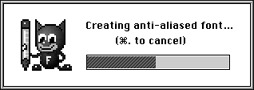

The 3DO FontWriter dialog, shown in Figure 1, appears.

Figure 1: 3DO FontWriter dialog.
Change the Min ASCII or Max ASCII value in the Font Info box if you need only part of the sequence of ASCII characters.
Make sure the View Area's Max Width and Max Height define ample space for any character at the specified font size, or you can lose information with some styles. You can remove unused space bordering the characters later, as explained in Step 7 below.
Select two images per character if you intend to create a shadow or outline effect using a contrasting color.
If you chose a font without outlines or shadows, the tool creates a mask with eight levels of gray that effectively produces an anti-aliased font.
If you chose a font with outlines or shadows, the tool creates two images with eight levels of gray each.

Figure 2: Progress dialog.
Save a font that the 3DO FontWriter can load for further editing by using Save (or Save As).
Save a font that your program can display on the 3DO Station using the Font Library utilities by using Save 3DO Font. The name for this file has the extension .3do.